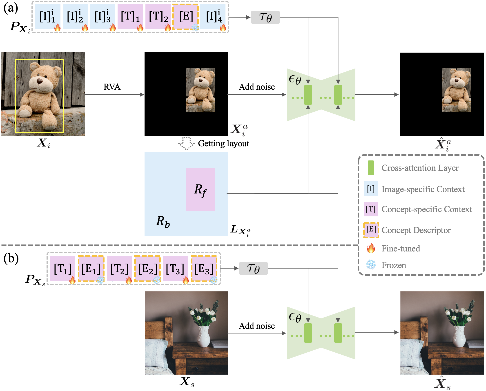

The demand for assorted conditional edits on a single real image is becoming increasingly prevalent. We focus on two dominant editing tasks that respectively condition on image and text input, namely subject-driven editing and semantic editing. Previous studies typically tackle these two editing tasks separately, thereby demanding multiple editing processes to achieve versatile edits on a single image. However, fragmented and sequential editing processes not only require more user effort but also further degrade the editing quality. In this paper, we propose UniCanvas, an affordance-aware unified framework that can achieve high-quality parallel subject-driven and semantic editing on a single real image within one inference process. UniCanvas innovatively unifies the multimodal inputs of the editing task into the textual condition space using tailored customization strategies. Building upon the unified representations, we propose a novel inference pipeline that performs parallel editing by selectively blending and manipulating two collaborative text-to-image generative branches. Customization enables the editing process to harness the strong visual understanding and reasoning capability of pre-trained generative models for affordance perception, and a unified inference space further facilitates more effective affordance interaction and alignment for compelling editing. Extensive experiments on diverse real image demonstrate that UniCanvas exhibits powerful scene affordance perception in unified image editing, achieving seamless subject-driven editing and precise semantic editing for various target subject and query prompts.
|
We achieve affordance-aware unified editing based on text-to-image model customization, inspired by its two key merits. First, a unified image editing task takes two modalities as input, i.e., textual prompts and images. Text-to-image model customization can convert images into textual conditions, unifying two types of input to the same modality, thereby paving the way for unified editing. Furthermore, large-scale pre-trained models exhibit powerful generative priors for visual understanding and reasoning. Model customization implants the visual concept into pretrained models, providing a potential solution to unlock the models’ capacity for scene affordance perception in image editing. |

Overall pipeline of the fine-tuning process. (a) Target subject customization. We introduce Region-Aware Customization (RAC) strategy to target subject fine-tuning. RAC incorporates the generation region R_f of the subject as an additional condition, alongside Region Variability Augmentation (RVA) for data construction and a dedicated novel prompt scheme. (b) Source image customization. The model is fine-tuned with a single image-prompt pair. |
Overall framework of the inference process. UniCanvas achieves unified editing with two collaborative text-to-image generative branches, namely the subject branch and the image branch. The subject branch is conditioned on P_C_f and is tasked with generating the target subject in the specified region, while the image branch is conditioned on P_X_s and is responsible for faithfully reconstructing the source image. These two generative branches are integrated using a Selective Blending Module (SBM) at each cross-attention layer to achieve subject-driven editing. SBM employs cross-attention maps to dynamically determine aggregation weights of two branches. Semantic editing can be performed on both the blended subject and the source image by making corresponding textual modifications to P_C_f and P_X_s. |


@article{jin2025unicanvas,
title={UniCanvas: Affordance-Aware Unified Real Image Editing via Customized Text-to-Image Generation},
author={Jin, Jian and Shen, Yang and Zhao, Xinyang and Fu, Zhenyong and Yang, Jian},
journal={International Journal of Computer Vision},
pages={1--25},
year={2025},
publisher={Springer}
}